参考Alex Guster在分段躯体上组织连续运动纹样的方法。保留原有水鬼与泥潭结构，连贯青绿流纹、暗色湿发、浅眼和底部沉积物分区，减少衣服镶边感。
左旧右新：共同取景范围、相同机位；逐面采样真实PNG的软件图。
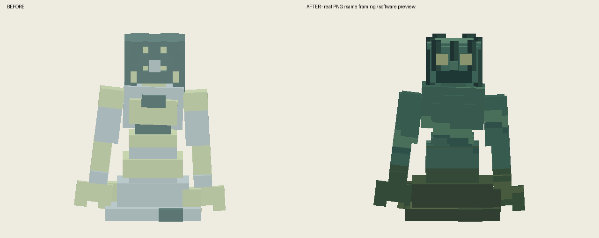
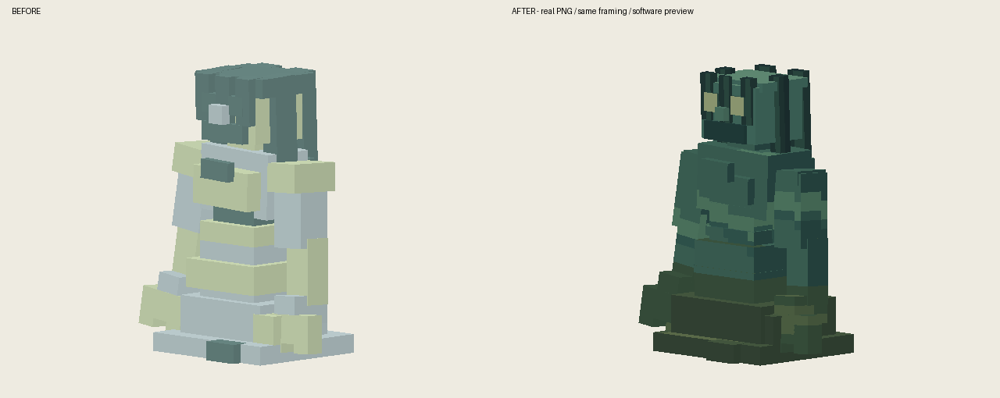
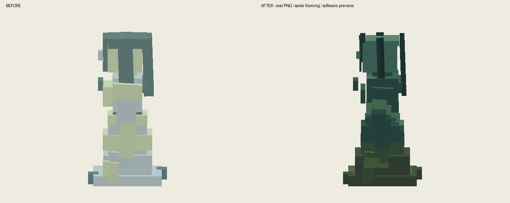
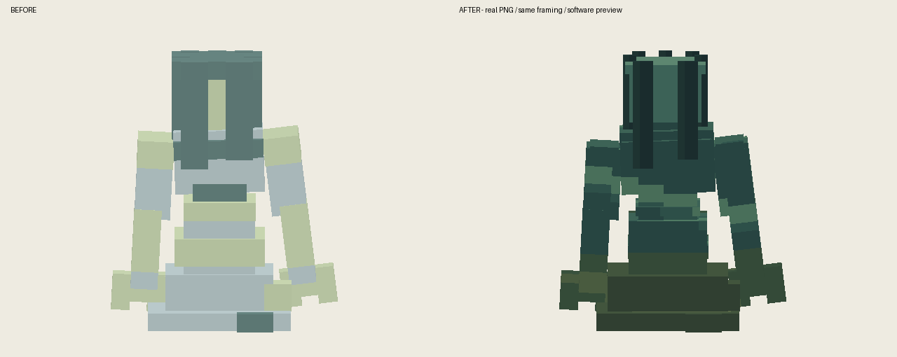
静音隔离存档；守卫批次检查正侧背、移动、攻击接触、特殊动作、受伤、倒地与重载。水鬼批次同样检查上述动作和重载。不是自然副本或多人战斗验收。
24-shashui_funigui-front
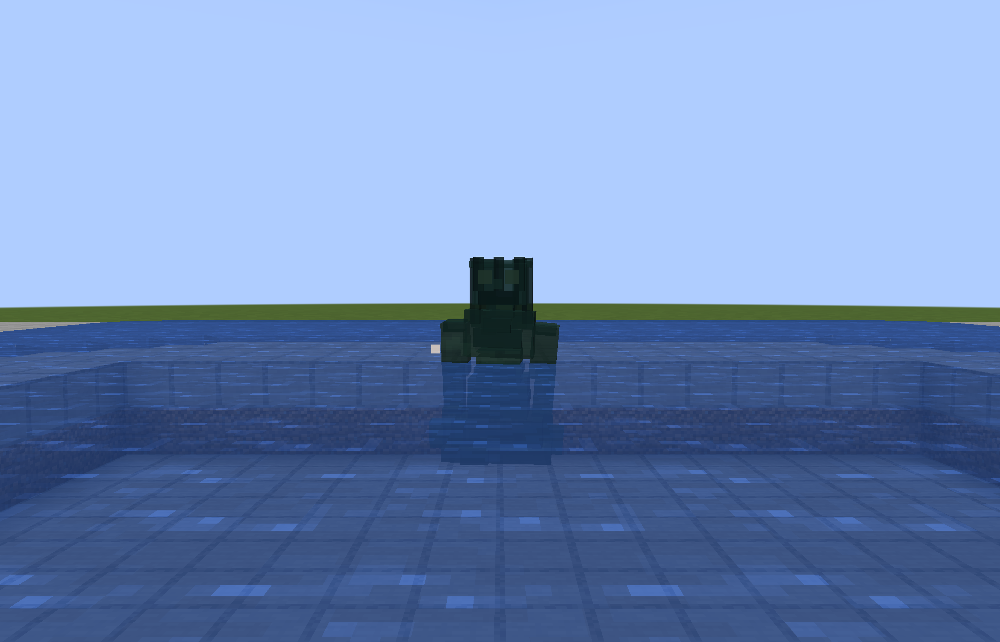
25-shashui_funigui-45
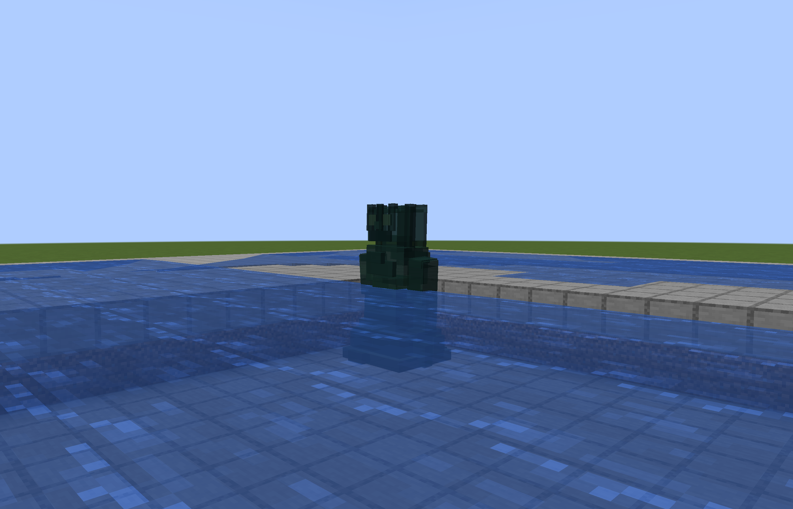
26-shashui_funigui-side
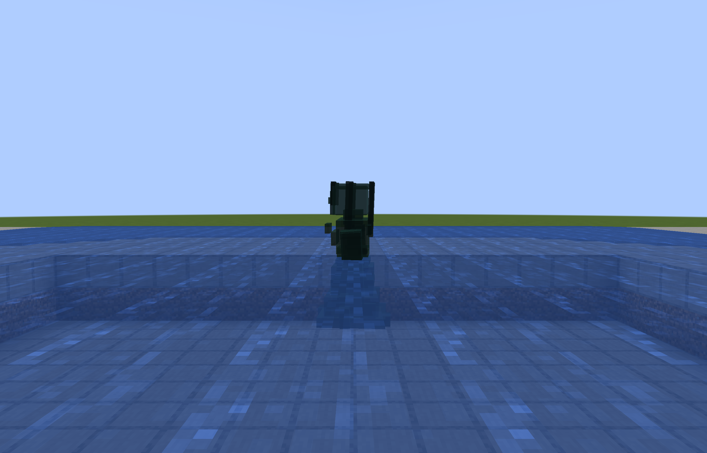
27-shashui_funigui-back
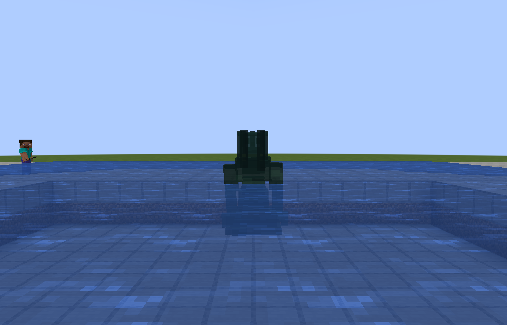
28-shashui_funigui-walk
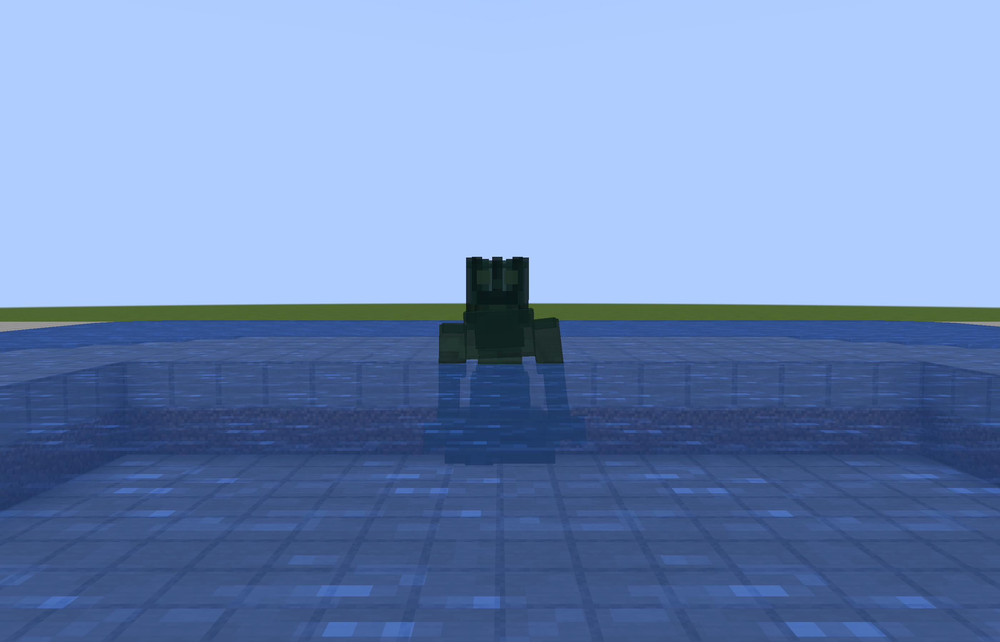
29-shashui_funigui-run
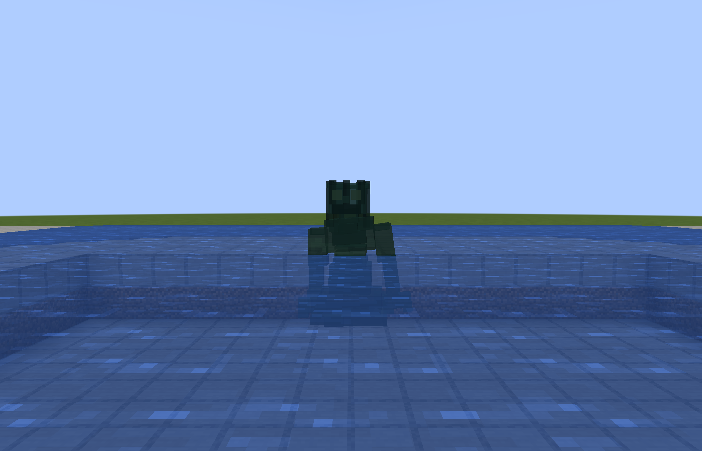
30-shashui_funigui-attack-tell
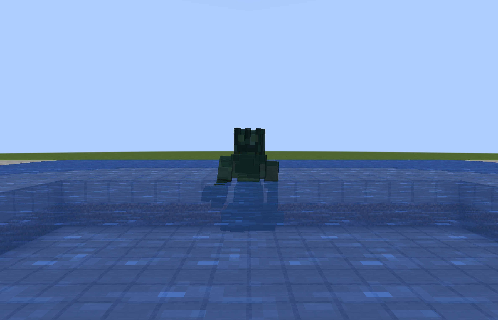
31-shashui_funigui-attack-contact
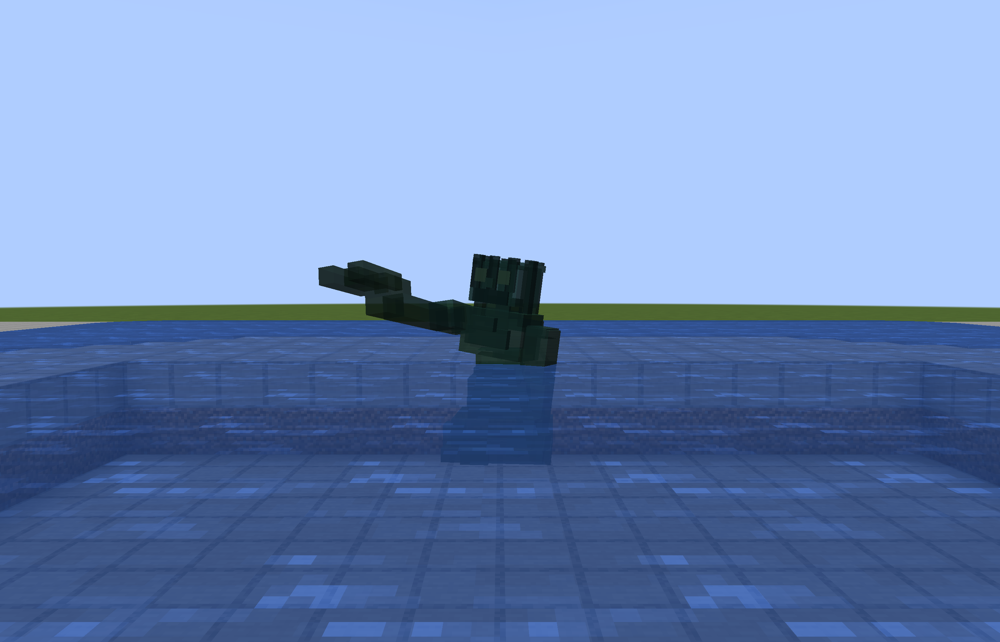
32-shashui_funigui-special-tell
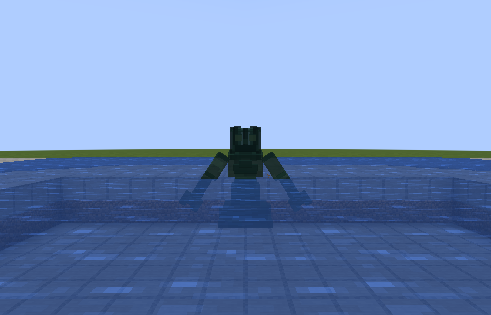
33-shashui_funigui-special-contact
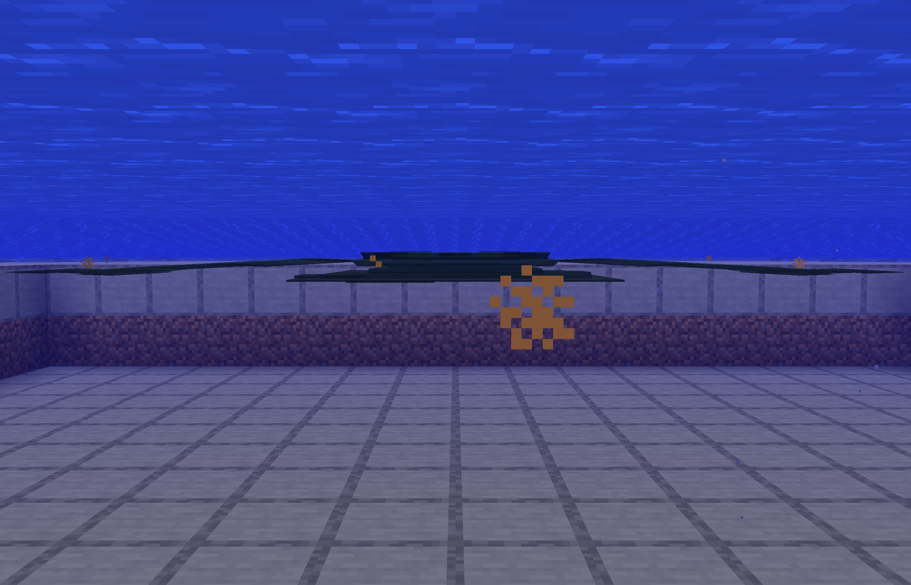
34-shashui_funigui-hurt
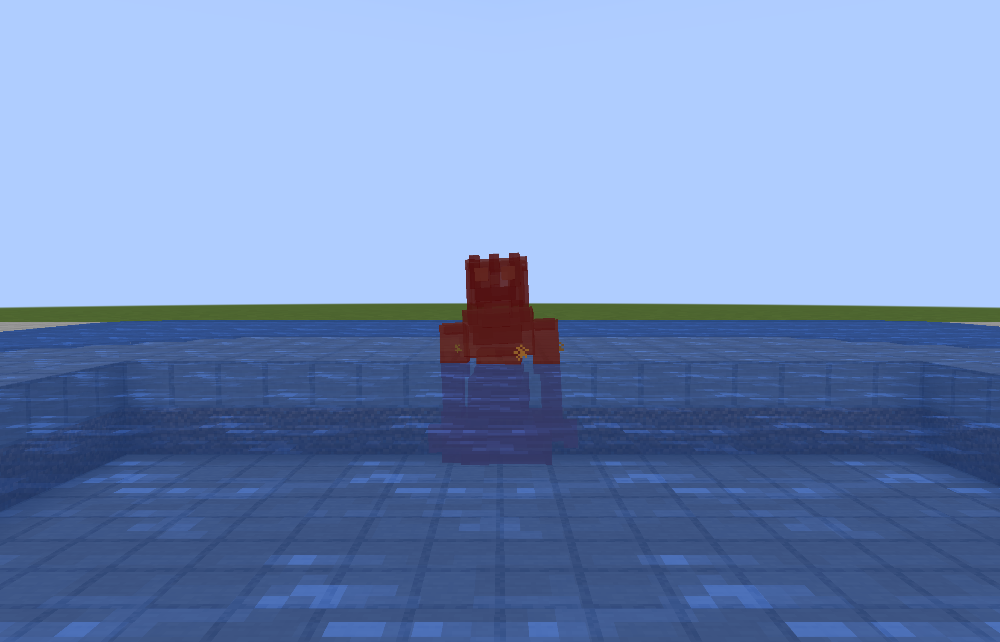
35-shashui_funigui-death
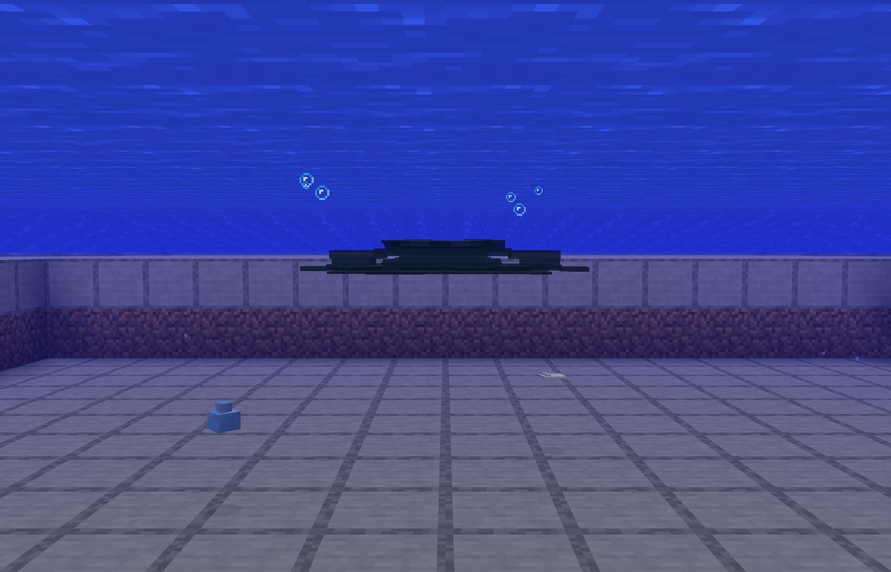
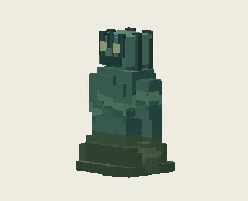
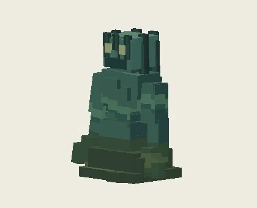
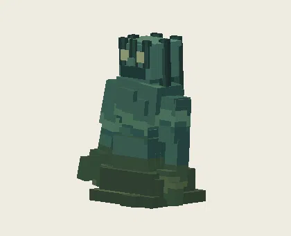
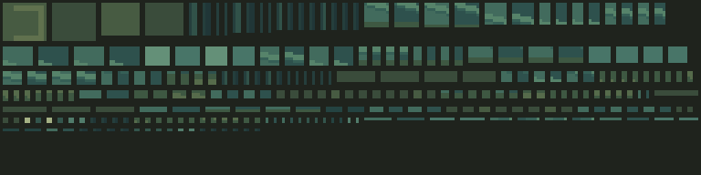
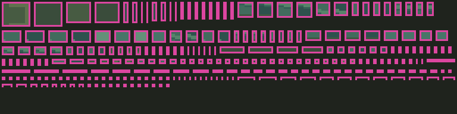